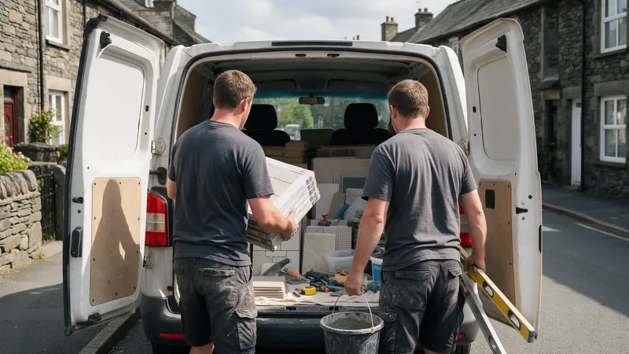
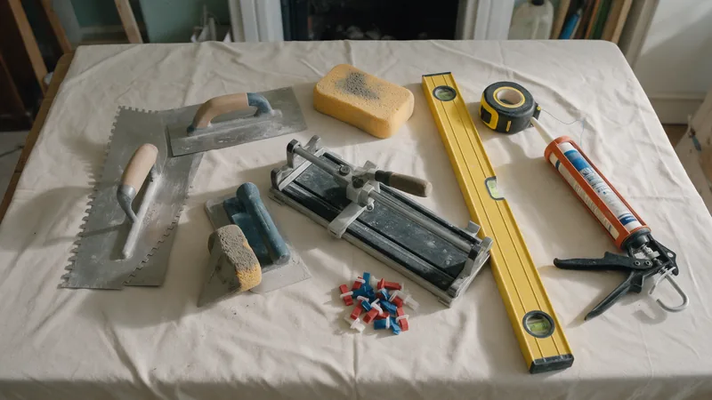

About
A firm that does not exist.
Tessgate Tiling is invented. There is no van, no unit and nobody to ring. It is a demo built by Clockwork AI to show a real tiling firm what a site looks like when everything on it is written properly. The story below is made up too, and it is here because a real site needs one and this is what a good one reads like.
The made up version
Two of us and a van, working out of a lock up on the edge of town with a wet saw under a lean to and more half boxes of tile than anybody needs. One of us came to it through bathroom fitting and one through floor laying, which turns out to be a useful split, because between them that covers most of what gets asked for.
The name came off a lane one of us used to live on and the word that is in every conversation we have. It sounded better than the first four ideas and it fitted on a van door.
The work is ordinary and we are not pretending otherwise. A bathroom in a nineteen thirties semi where the plasterboard behind the shower had gone soft and nobody knew. A splashback behind a new kitchen, done in a day. A slate hall floor in a cottage where the floor fell two inches across the room. A patio that somebody else had laid on dabs and which lifted in the first hard winter. A regrout that the customer had been told was a full retile.
What we would want a customer to notice
Not the tile. Anybody can order a nice tile. What we would want noticed is that the joints are the same width everywhere, that there are no daft slivers at the door, that you cannot feel a step between one tile and the next when you run your hand down the wall, and that the corners are still shut three winters later.
And what we would say no to
Tiling over a wall that drums. Grouting an internal corner. Fixing on five dabs instead of a full bed. Laying indoor tile outside. Tiling a shower with nothing waterproof behind it. Putting a one metre tile on a wall somebody will not let us make flat first. Every one of those is a quicker, cheaper day on the tools and a phone call nobody wants in two years.

Generated photoGenerated for this demo. The people in it are not real and nobody in any picture on this site is identifiable.

Generated photoA straightedge, a chalk line and a notched trowel do more of this job than anything with a motor in it.
The three of us
Invented people.
Nia
Came to tiling through bathroom fitting, which is why she will not let a shower go in without something waterproof behind it. Does the set out on every job and marks the walls up in pencil before anybody opens a bag.
Tom
Floors, stone and anything big. Spent years laying floors before he picked up a trowel, so he checks what is underneath before he looks at what is going on top, and he is the one who notices a bounce nobody else felt.
Bry
Second year, and already better on the wet saw than either of them. Does the raking out and the stripping, which is the worst job on any site, and is the reason the dust sheets actually go down before it starts.
Invented for this demo. No real people, no photographs of anybody and no claims about anybody's qualifications or experience.
About this demo
What you are actually looking at.
Everything is fictional
The firm, the people, the jobs, the reviews and the pictures. The firm's phone number is from the range Ofcom keeps for television and film, so it rings nobody, and the email ends in .example, which cannot receive anything.
Nothing here is sent or saved
The quote form checks your answers and previews your photographs in your own browser, then shows a thank you. The chat box is a script with no connection to anything. Nothing leaves your device and nothing is stored.
No prices and no promises
There are no prices anywhere on this site, no guarantees, no schemes, no qualifications, no insurance claims and no response times, on purpose. Everything factual on it is general trade knowledge rather than advice on your property.
Seen enough of the demo?
Have a look at the work, the advice or the quote form. Or ring Clockwork on the number in the bar at the top.